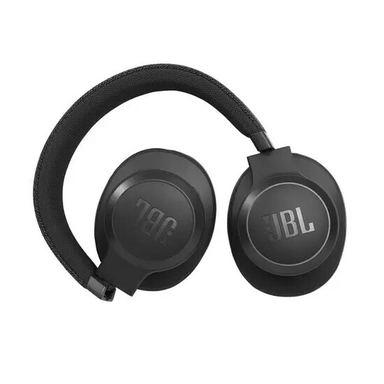
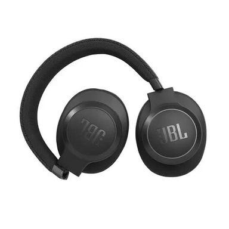

Brand:JBL
Noise Cancelling:ANC
Ambient Mode:Yes
Sound Frequency:16 Hz - 20 kHz
Design:Overear
Bluetooth:5
Number of microphones:2
Driver Size:40 mm
IP Protection:No
Color:Black
Date of issue:7/28/2021 12:00:00 AM
Weight:265 g
NFC:No
Additional Information: N/A
Application:Yes
Wireless Charging:No
Charging Time:Approx. 2 h
Element Duration:Up To 50 h